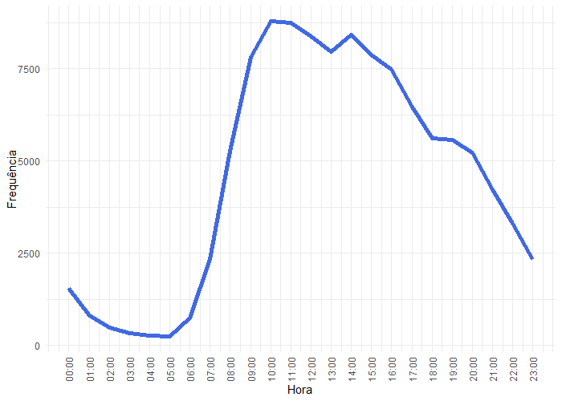
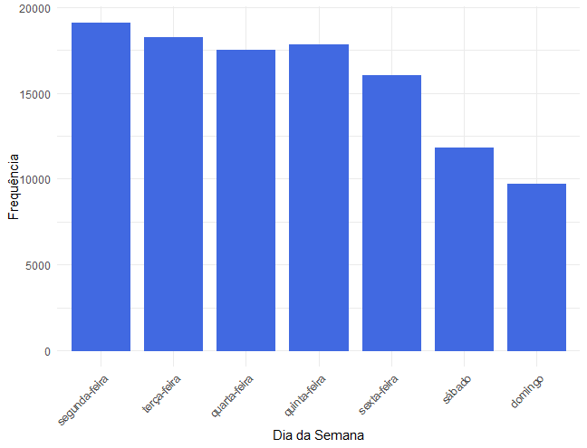
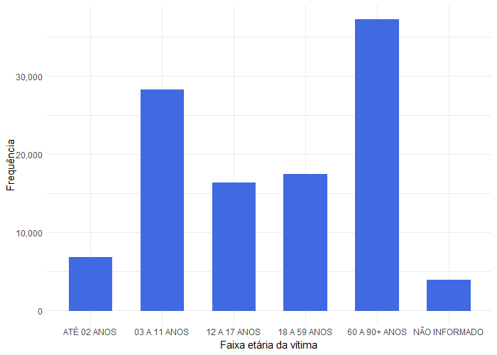
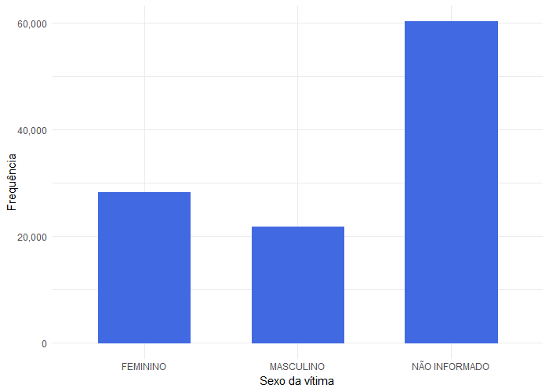
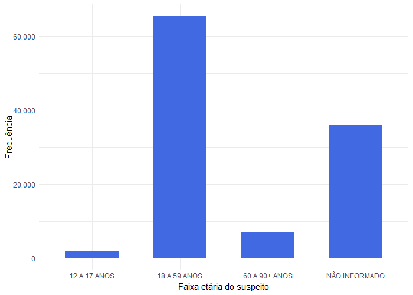
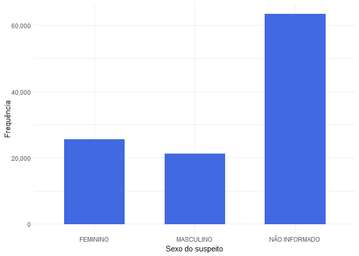
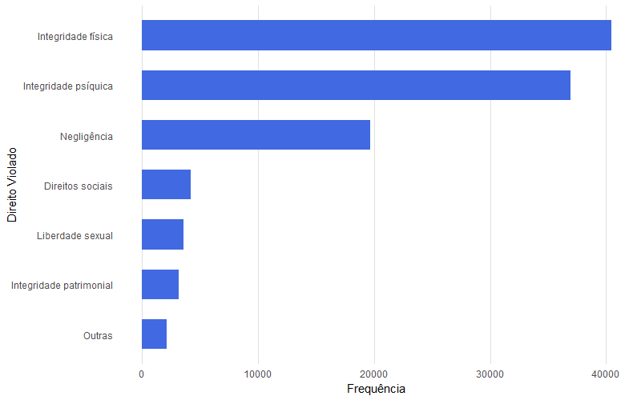
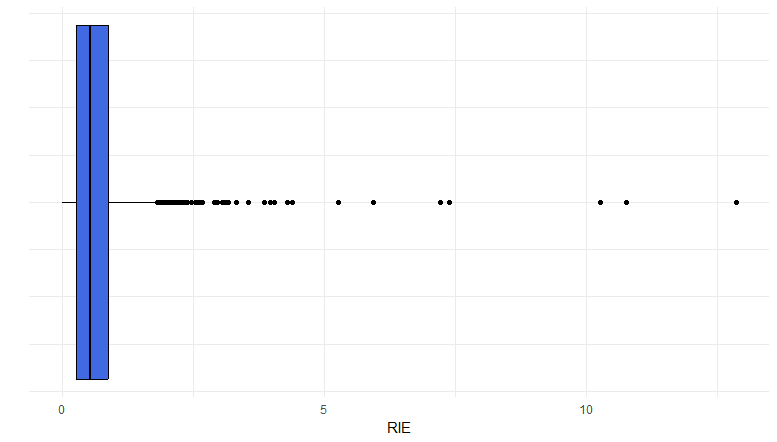

| Min | Med | Max | IQR | Media | DP |
|---|---|---|---|---|---|
| 0 | 0.5 | 12.9 | 0.6 | 0.7 | 0.8 |
ANÁLISE DE PADRÕES ESPACIAIS DAS DENÚNCIAS NO DISQUE 100 NO NORDESTE NO ANO DE 2024
Ana V. R. de Araújo e Jodavid de A. Ferreira
Departamento de Estatística - UFPE
“Todos os seres humanos nascem livres e iguais em dignidade e em direitos. Dotados de razão e de consciência, devem agir uns para com os outros em espírito de fraternidade. {…} Todo indivíduo tem direito à vida, à liberdade e à segurança pessoal.”
Declaração Universal dos Direitos Humanos (DUDH), 1948.
Disque 100
- O Disque-100 é um serviço gratuito; que possibilita a realização de denúncias de violações e está disponível em todo o território brasileiro.
- Funciona 24 horas por dia, todos os dias.
- As denúncias podem ser feitas de forma anônima.
- Após recebidas, as denúncias são analisadas e encaminhadas aos órgãos de proteção, defesa e responsabilização em direitos humanos, no prazo máximo de 24 horas.

Razão de Incidência Espacial (RIE)
É um indicador que calcula a razão entre duas incidências de um fenômeno.
Dada uma região \(Z\) com \(t\) sub-regiões distintas, ou seja, \(Z_i\), \(i = 1, \ldots, t\), temos que a Razão de Incidência Espacial (RIE) para uma sub-região \(Z_i\) é dada por
\[ RIE_{z_i} = \frac{C_{z_i} / n_{z_i} }{\sum_{i=1}^{t}{C_{z_i} / n_{z_i} }}, \]
em que, \(C_{z_i}\) , com \(i = 1,2, \ldots, t\), representa o número de ocorrências de um fenômeno, \(n_{z_i}\), com \(i = 1,2,\ldots, t\), representa a população daquela área (sub-região).
Valores da RIE superiores a 1 indicam que a incidência daquela subregião é superior à incidência da região geral, enquanto valores abaixo de 1 indicam que a incidência é inferior à da região geográfica estudada.
Varredura Scan Espacial
- A Varredura Scan Espacial tem como objetivo identificar conglomerados em unidades cuja ocorrência de um evento é significantemente mais provável dentro de uma área do que fora dela.
- Temos uma região de estudo composta por regiões menores. A população e o número de casos do evento estudado de cada subregião são conhecidos.
- Além disso, um centróide é associado a cada subregião.
- O método Scan Espacial começa posicionando um círculo em cada centróide. O raio desse círculo é expandido gradualmente até abranger uma parcela pré-definida da população, neste caso 0,1%. Durante essa expansão, um teste de hipóteses é realizado para avaliar se a área dentro do círculo forma um conglomerado espacial.
Varredura Scan Espacial - Modelo Poisson
Neste estudo foi utilizado o Modelo Poisson.
No modelo Poisson são computados os raios cujos valores de \(p(z_i)\) e \(q(z_i)\) maximizam a função de verossimilhança, em que:
- \(p(z_i)\) a probabilidade do evento em estudo ocorrer dentro do círculo da sub-região \(z_i\),
- \(q(z_i)\) a probabiliade de o evento ocorrer fora do mesmo da sub-região \(z_i\).
A estatística de Kulldorff-Nagarwalla (KN) é definida por:
\[ KN_i = \frac{L(z_i,\hat{p}(z_i),\hat{q}(z_i))}{L0} \]
- \(z_i\) é o conjunto de sub-regiões cadidatos a conglomerados;
- \(\hat{p}(z_i)\) é uma estimativa de \(p(z_i)\);
- \(\hat{q}(z_i)\) é uma estimativa de \(q(z_i)\).
Varredura Scan Espacial - Modelo Poisson
\(L0\) é dado por:
\[ L0 = \frac{C^{C}(M-C)^{M-C}}{M^M} \]
em que,
- \(C = \sum_{i=1}^{t} C_{z_i}\) e \(M = \sum_{i=1}^t n_{z_i}\) é o total de casos observados e toda a populacão da região de estudo;
Varredura Scan Espacial - Modelo Poisson
E temos que \(L(z_i,\hat{p}(z_i),\hat{q}(z_i))\) é dado por:
\[ L(z_i,\hat{p}(z_i),\hat{q}(z_i)) = \frac{ \exp[-p n_{z_i} - q(M - n_{z_i})] }{C!} p^{C_{z_i}}q^{C-C_{z_i}} \prod_{j=1}^k C_{z_j} \]
em que,
\(C_{z_i}\) com \(i = 1,2, \ldots, t\) é o número de casos das sub-regiões existente no círculo da sub-região \(z_i\);
\(C_{z_j}\) com \(j = 1,2,\ldots, k\) é o número de casos na \(j\)-ésima sub-região existente no círculo da sub-região \(z_i\), de um total de \(k\);
\(n_{z_i}\) é o número de indivíduos em risco nas sub-regiões existente no círculo da sub-região \(z_i\);
Varredura Scan Espacial - Modelo Poisson
Através da estatística KN, aplica-se um teste de hipóteses, ao nível de significância de 5%, com as hipóteses:
\[ \left\{ \begin{array}{ll} H_0 : p(z_i) = q(z_i), \\ H_1 : p(z_i) > q(z_i), \end{array} \right. \]
em que \(i = 1, \ldots, t\).
Para a decisão são gerados amostras Poisson utilizando a quantidade de casos esperados via processo Monte Carlo.
Resultados
Os dados utilizados são referentes a denúncias registradas pelo Disque 100 no ano de 2024 na região Nordeste do Brasil, agregadas por município. Os dados foram obtidos na plataforma do Governo Federal.
No período de 01 de janeiro a 31 de dezembro de 2024, houve um total de 110.278 denúncias.
Em 85,2% das observações, as denúncias foram feitas por terceiros e em 90,9% dos casos, foram realizadas por ligação telefônica.
48,9% das violações ocorreram na casa onde a vítima e o suspeito residiam juntos. Em 30,4% das denúncias, as violações ocorreram na casa onde a vítima reside, mas o suspeito não. Somando ambos os casos, observou-se que cerca de 79,3% das violações ocorreram na casa em que a vítima reside.
Resultados


Resultados


Resultados


Resultados


Resultados
Houveram 344 municípios com RIE maior que 1.

Para a análise Geoestatística, foram gerados mapas da RIE e do Scan Espacial.
Figura 10 - Mapa dos municípios com valores da Razão de Incidências Espacial (RIE).
Resultados
Notou-se que a maior parte dos municípios que apresentaram RIE igual ou superior a 1,5 foram identificados na varredura Scan.
O método detectou 291 municípios significativos, ou seja, a quantidade de denúcia sobre a população do município é estatísticamente fora do padrão esperado.
| Estados | AL | BA | CE | MA | PB | PE | PI | RN | SE |
|---|---|---|---|---|---|---|---|---|---|
| Frequencia (%) | 17 (16%) | 72 (17%) | 14 (16%) | 8 (4%) | 52 (23%) | 22 (12%) | 27 (12%) | 49 (29%) | 30 (40%) |
Figura 11 - Mapa dos conglomenrados obtidos através do método Scan espacial.
Conclusões
Dentre os municípios significativos, muitos se localizam mais próximo ao litoral nordestino.
A Bahia é o Estado com maior número de municípios significativos identificados.
À oeste da região Nordeste, não foram identificados municípios significativos.
Além disso, há ausência de denúncias em alguns municípios. Isso pode indicar uma subnotificação, possivelmente associada à falta de acesso à informação ou mesmo à inexistência de uma cultura de denúncia nesses territórios.
A aplicação da RIE e do método Scan permitiu identificar áreas com maior concentração de casos, e assim, pode contribuir para o direcionamento de políticas públicas mais eficazes e ações de enfrentamento mais direcionadas.
Referências
[1] ASSEMBLY, U. N. G. Universal declaration of human rights. [S.l.]: Department of State, United States of America, 1949. v. 3381.
[2] Governo Federal do Brasil. Denunciar violação de direitos humanos. 2023. Disponível em: https://www.gov.br/pt-br/servicos/denunciar-violacao-de-direitos-humanos.
[3] KULLDORFF, M.; NAGARWALLA, N. Spatial disease clusters: detection and inference. Statistics in medicine, Wiley Online Library, v. 14, n. 8, p. 799–810,